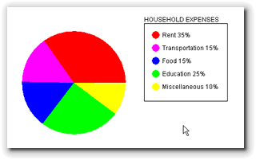
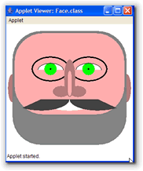

This week all of your exercises will be Java applets. Instead of using Web-CAT or JavaBat, you'll email your completed assignments to the email address: cs170su09@gmail.com. I will run Checkstyle against each of your programs, and, as usual, style will count for 10% of the grade. Use the Eclipse Checkstyle plugin to check your work before you submit it.
-
Homework 21 (Colors, Shapes and Random Numbers):
Download the file
WildOvals.java
and use Eclipse to complete the missing portions of your code.
(You'll need to import the downloaded file into your project.)
- As you complete this assignment, you'll have to generate random numbers in several places. Use at least two of the different techniques you've learned in this lesson to generate the numbers.
- Use random numbers to construct a
Colorobject, and use that object to color your oval. - In the
paint()method, draw a single, solid, colored oval on the screen. - Use random numbers for the coordinates and size used to draw the oval. To do this you'll have to generate four coordinates making sure they fall inside the screen area of the applet. Note that there are variables that specify how big the applet is and you can use them as part of your calculation. You'll then need to use the smaller of them as x and y, and calculate a value for width and height.
- When you draw your oval, make sure that it appears entirely
contained inside the screen. This is the hard part of this
assignment. You'll have to explore some of the methods in
the
Mathclass.
-
Homework 22 (Creating a Pie Chart) : Write an applet named PieChart.java that draws a pie chart showing the percentage of household income spent on various expenses. Use the percentages shown in the table on the right.
Rent and Utilities 35% Transportation 15% Food 15% Educational 25% Miscellaneous 10% The size of your applet canvas should be 500 wide by 350 high. Eclipse normally sizes the appletrunner window at 200 by 200, so you may want to start out by painting a rectangle of the correct size. I don't want your pie chart to be too small.
Each section of the pie should be in a different color, of course. Label each section of the pie with the category it represents—the labels should appear outside the pie itself. (An easy way to do this is to use
drawRect()to create a legend area on the applet, but you can paint labels with leader lines, if you want.)
Here's an example that you can use as a guide. Yours may look much differently of course, but the pie percentages should be accurate.To submit the assignment, mail PieChart.java as an attachment to cs170su09@gmail.com using LastFirst hw22 as the subject line. Replace Last and First with your actual name; use a single space, not an underscore, between your name and the assignment number in the subject line. Do not put a space between your first and last name, or between "hw" and "22". Don't forget to attach the PieChart.java file!
(5 points) -

Homework 23 (Self Portrait): Create an applet named MyPortrait.java that draws your self-portrait. Here are the instructions:- The applet canvas should be 350 by 350. Center your picture in the applet. Don't make your head too small.
- Give your face eyes with pupils, ears, a nose and a mouth.
- Write a separate procedure to draw each feature.
- Pass parameters to your methods as appropriate. For
instance, you'll need to at least pass the
Graphicspen to eachdrawXXX()procedure. You may also use class constants (WIDTH,HEIGHT, etc.) to reduce the number of parameters your methods need to use. - Use at least three different colors for your portrait and try to make it recognizable.
Graphicsmethods for drawing ovals, rectangles, lines, and arcs. Do not use any image drawing methods.The applet shown above is from my self-portrait. Here are some portraits drawn from previous CS 170 classes.

To submit the assignment, mail MyPortrait.java as an attachment to cs170su09@gmail.com using LastFirst hw23 as the subject line. Replace Last and First with your actual name; use a single space, not an underscore, between your name and the assignment number in the subject line. Do not put a space between your first and last name, or between "hw" and "23". Don't forget to attach the MyPortrait.java file!
(10 points) NOTICE THE POINTS ARE DOUBLE. - Use Chapters 14 and 17 in your textbook as reference material. Just skim for the information that is in the online lessons. Complete the Unit 7 Quiz online before the deadline.
Remember that all of these assignments are due before the deadline, so make sure you don't get "caught short".